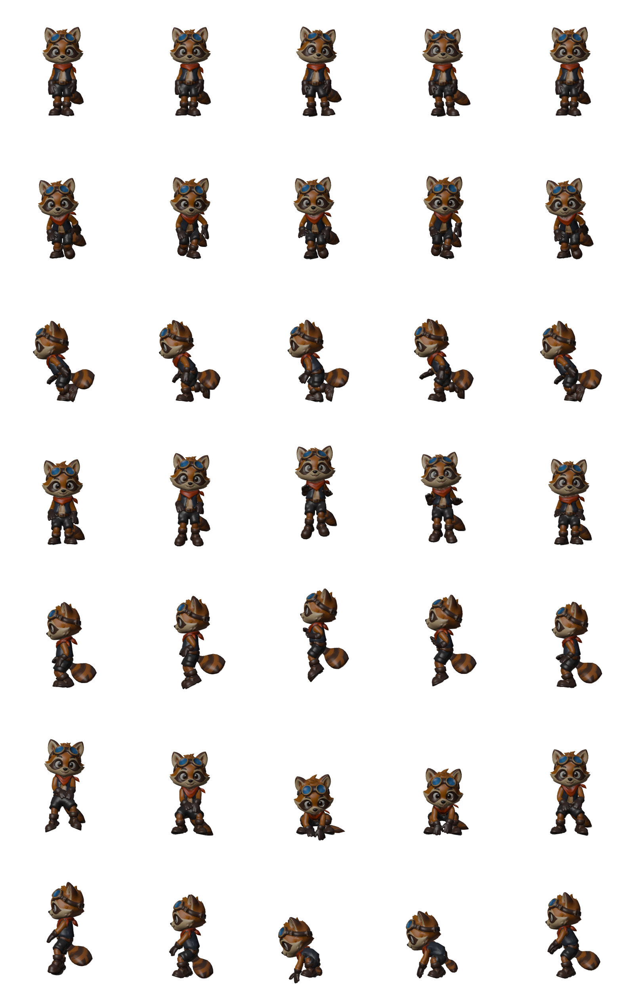
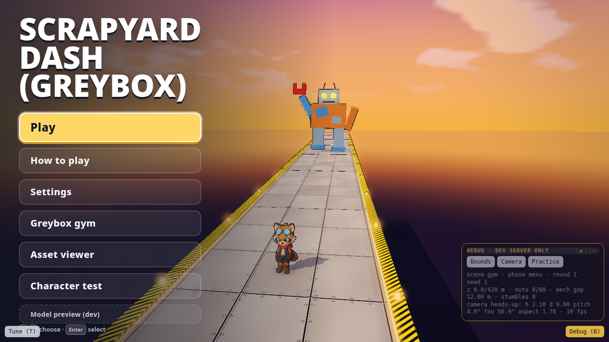

share/media/menu-redesign/nohelp-menu.pngScrappy Yard is a small 3D runner. You play a raccoon in goggles and a red scarf, sprinting toward the camera down a scrapyard walkway while a patchwork junk mech with a magnet arm stomps after you. Jump the oil barrels, slide around the scrap cars, clear the gaps, grab the glowing hex nuts, and don't let the mech close the gap. It runs in the browser on desktop and phone at scrappy-yard.vercel.app.
I didn't write the code, model the characters or compose the music. Grok Bot did, on its own Linux box, while I sent short messages from my laptop. This post walks through how that went, which tools did what, and what I'd tell anyone trying the same thing.
Starting point: a template I trust
The game started from vgd-wasm-game-template v2.7.0, a template I maintain for WASM games. It already has the engine, a Rust simulation layer, release packaging, smoke tests, and a set of guided steps: premise, mockups, kickoff, slice. My first message wasn't about the game at all. I asked Grok Bot to get familiar with the template and sanity-check the README, skills and quickstart from the exact tag it would build on. It did, reported that v2.7.0 was "green enough to start a new game from", and created the game folder on Nov 3 at 3:45 PM.
That choice paid off for the rest of the build. Because the plumbing already worked, almost every message I sent afterward was about how the game looked or felt.
A premise in one sentence
Grok Bot asked me a few questions on cards. My game idea, as typed: "Crash bandicoot x Mario 3d x Spyro style runner , running toward camera, mech in the background chasing you." Desktop and mobile, five-to-ten-minute sessions. Win by finishing the course; lose by hitting a hazard, falling, or getting caught. The core feel: lane dodge, jump and collect under chase pressure. The camera faces the player and the world streams at you. That became the brief.
Mockups before anything else

share/media/review-1/C.png
share/media/review-1/D.pngNext, Grok Bot used fal (GPT Image 2.5 Flare) with my key to make four mockups: fake gameplay screenshots of the same moment in four settings. Jungle ruins, crystal canyon, toybox islands, scrapyard neon. All four cost about fifteen cents together. It wrote up the strengths and risks of each and recommended the toybox option for readability and build cost.
I picked D, the scrapyard. It had the most personality, and the story was right there: you're running through the mech's own backyard. Grok Bot turned D's weak spots into rules for the next stage (raise the contrast between hero and track, simplify the busy sides, keep the hero original) and moved on.
Greybox first
Before generating a single model, Grok Bot built a greybox "gym" with placeholder shapes and the real rules: three lanes, jumping, barrels that make you stumble, cars and gaps that end the run, a mech that closes in whenever you slow down. No credits spent. It also recorded b-roll of the gym so I could see it before I played it.
share/media/kickoff/broll/gym-broll.webmIn the same message that asked for the b-roll, I flagged the main problem: the camera copied the mockup so closely that you could only see about a metre of track ahead. I wrote that there was "not enough 'heads up' for the player to react". The next version showed about 5.6 m ahead, with a lane radar, lamps and audio pings. Fixing that on grey boxes cost nothing.
To play the dev build myself, I had Grok Bot install Tailscale on its box. I approved it on my tailnet (and admitted I wasn't sure what a tailnet was), then played from my MacBook while it kept working.
Characters: fal, then Tripo, then Blender

share/media/kickoff/char_raccoon_player-turnaround.png
share/media/kickoff/char_raccoon_player-clips.pngFor the raccoon, Grok Bot wrote a detailed turnaround prompt for fal: front, three-quarter, side and back views in one row, an A-pose with empty hands, flat gray background, no props. It cropped three views out of the sheet and fed them to Tripo to make a textured mesh. A free Tripo check confirmed the mesh was a riggable biped. Then Tripo auto-rigged it and retargeted idle, run, jump and land animations onto it.
My instruction there was "you can autorig and then blender polish yeah". The polish is a Blender script that can be rerun at any time. It sets the height to exactly 1.1 m, puts the pivot at the feet, retimes the jump to match the game's airtime, closes the run loop's seam, and makes the goggle lenses glow cyan so the raccoon stands out from the brown track. Grok Bot also built a character test scene to preview the clips on a treadmill without touching the gym.
The junk mech followed the same path, using a crop of mockup D as its identity reference, and got a stomping walk loop from Tripo. The barrel and scrap car got fal reference images and Tripo meshes too. The hex nut and the track tile were simple enough to model straight in Blender. My one-line policy for that was: "use image generation to create reference images for each of these items an then use tripo to generate them / we can use blender for things we can model ourselves".
Every paid step waited for a yes from me. When I approved about 65 Tripo credits for the mech's rig, it came back at 45. Across the whole build, Tripo spending came to 390 credits.
Making it feel good
Most of my notes from playtests were one or two lines. "The sides are popping in." "Allow freedom of movement left and right, but obviously still keep the key collisions lane based." "Loading is very slow on mobile." And a death animation on game over, "so that he isn't running on the spot."
Each turned into a concrete change: scenery that grows out of the haze instead of popping in; continuous strafing where hazards still belong to lanes; a loader that starts as soon as the raccoon is ready and streams everything else in; a game-over pose done in code, since Tripo's clips didn't include a death animation.
share/media/trailer/project/assets/footage/dodge.mp4Shipping, then sound
On the afternoon of Nov 4 I asked for a production deploy on Vercel. The template won't deploy without a passing smoke test, and that test still expected the old lane-snap controls, so Grok Bot updated it, got it passing on desktop and phone under WebGPU and WebGL2, and shipped. The game went live at 2:51 PM, a day after the first commit.
Then audio. I gave Grok Bot an ElevenLabs API key through a secure prompt (never pasted in chat) and asked for "all bgm for the main menu, the main game, and sfx for the game and menu". It wrote a prompt for each sound, for example "Heavy giant robot mech footstep stomp, metallic thud with hydraulic hiss", and wired seventeen files into the game with a synth fallback. The stomp gets louder and faster as the mech closes in, so you hear the threat before you see it.
A world, an entrance, a menu

share/media/kickoff/env-dressing-play.pngThe track looked empty, so I asked for props, a better sky, and "things flying around above". Tripo made a crane and a scrap cargo plane. Blender made tire stacks, pallets, fences, containers, a skyline and clouds. Planes now cross overhead every 11 to 17 seconds. When I said "we need no square or rectangle cubes", the last placeholder boxes went.
The mech also got an entrance: Play now opens with it dropping from the sky, slamming onto the deck and roaring. During the run it leans and lunges at you.

share/media/menu-redesign/before-menu.pngshare/media/menu-redesign/nohelp-menu.pngLast came the menu. I asked for something "more game like, look entirely different", no slow transition from the splash, new sounds, and "a different sound than the clown sound" for crashing. The result is hazard tape, riveted steel buttons, and a stamped wordmark (it read SCRAPYARD DASH then; it now reads SCRAPPY YARD) over the live scene, with chunky industrial clicks and a scrap-metal crash. The next morning I cut How to Play from the main menu; it lives on the pause card now.
A trailer from real footage
I asked Grok Bot to "install hyperframes and make a trailer of the game". It captured gameplay headlessly, wrote a shot spec, and cut a 36-second trailer to the game's own chase music, with the jump, pickup and crash sounds landing on the real in-game moments.
share/media/trailer/scrapyard-dash-trailer.mp4After the rename I asked for "more b roll and a trailer showing gameplay mainly". Grok Bot recaptured the current build from six camera setups (heads-up, high read, mockup D, low chase, a crash, the round start) and cut a 40-second version that is almost all play: one continuous run, wide shots, a beat montage, the mech closing in, a real crash, then the Scrappy Yard end card.
share/media/trailer/scrappy-yard-gameplay-trailer.mp4share/media/trailer/gameplay/broll/sy-run-long.mp4share/media/trailer/gameplay/broll/sy-chase-long.mp4share/media/trailer/gameplay/broll/sy-mockd.mp4One more change came at the end: on Nov 5 I renamed the game from Scrapyard Dash to Scrappy Yard.
What I'd tell someone trying this
Start from a template that already builds, tests and deploys. Every message you send then goes into the game itself.
Make mockups before assets, and pick with your gut. Then write down what's weak about your pick so it gets fixed later.
Prove the rules in a greybox. Camera problems are cheap on grey boxes and expensive on finished art.
Keep notes short and specific. "He looks like he's gliding" is a better brief than a paragraph.
Make the builder ask before every spend, and keep every prompt saved next to what it produced so anything can be regenerated.
The build isn't finished. My latest notes are parked for the next pass: proper terrain at the sides, planes that fly nose-first, a faster run cycle, barrels and cars that explode when the mech smashes them, and a mech that bursts out to start the chase. Play the public build at scrappy-yard.vercel.app (alias of the Nov 4 afternoon ship plus later passes that made it into production — audio, world, menu, intro, Scrappy Yard name). See how far you get before it catches you.